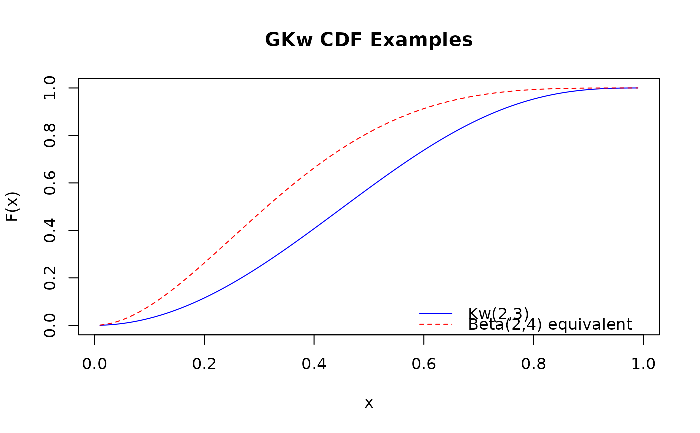

Cumulative Distribution Function (CDF) of the Generalized Kumaraswamy Distribution
Source:R/gkw.R
pgkw.RdComputes the cumulative distribution function (CDF) for the five-parameter Generalized Kumaraswamy (GKw) distribution, defined on the interval (0, 1). Calculates \(P(X \le q)\).
Usage
pgkw(
q,
alpha = 1,
beta = 1,
gamma = 1,
delta = 0,
lambda = 1,
lower.tail = TRUE,
log.p = FALSE
)Arguments
- q
Vector of quantiles (values generally between 0 and 1).
- alpha
Shape parameter
alpha> 0. Can be a scalar or a vector. Default: 1.0.- beta
Shape parameter
beta> 0. Can be a scalar or a vector. Default: 1.0.- gamma
Shape parameter
gamma> 0. Can be a scalar or a vector. Default: 1.0.- delta
Shape parameter
delta>= 0. Can be a scalar or a vector. Default: 0.0.- lambda
Shape parameter
lambda> 0. Can be a scalar or a vector. Default: 1.0.- lower.tail
Logical; if
TRUE(default), probabilities are \(P(X \le q)\), otherwise, \(P(X > q)\).- log.p
Logical; if
TRUE, probabilities \(p\) are given as \(\log(p)\). Default:FALSE.
Value
A vector of probabilities, \(F(q)\), or their logarithms if
log.p = TRUE. The length of the result is determined by the recycling
rule applied to the arguments (q, alpha, beta,
gamma, delta, lambda). Returns 0 (or -Inf
if log.p = TRUE) for q <= 0 and 1 (or 0 if
log.p = TRUE) for q >= 1. An out-of-bound or missing parameter is an
error, not a return value: the wrapper stops with a message naming the
parameter. An infinite parameter is not currently intercepted there and
reaches the C++ layer, which treats it as invalid.
Details
The cumulative distribution function (CDF) of the Generalized Kumaraswamy (GKw)
distribution with parameters alpha (\(\alpha\)), beta
(\(\beta\)), gamma (\(\gamma\)), delta (\(\delta\)), and
lambda (\(\lambda\)) is given by:
$$
F(q; \alpha, \beta, \gamma, \delta, \lambda) =
I_{x(q)}(\gamma, \delta+1)
$$
where \(x(q) = [1-(1-q^{\alpha})^{\beta}]^{\lambda}\) and \(I_x(a, b)\)
is the regularized incomplete beta function, defined as:
$$
I_x(a, b) = \frac{B_x(a, b)}{B(a, b)} = \frac{\int_0^x t^{a-1}(1-t)^{b-1} dt}{\int_0^1 t^{a-1}(1-t)^{b-1} dt}
$$
This corresponds to the pbeta function in R, such that
\(F(q; \alpha, \beta, \gamma, \delta, \lambda) = \code{pbeta}(x(q), \code{shape1} = \gamma, \code{shape2} = \delta+1)\).
The GKw distribution includes several special cases, such as the Kumaraswamy,
Beta, and Exponentiated Kumaraswamy distributions (see dgkw for details).
The function utilizes numerical algorithms for computing the regularized
incomplete beta function accurately, especially near the boundaries.
References
Carrasco, J. M. F., Ferrari, S. L. P., & Cordeiro, G. M. (2010). A new generalized Kumaraswamy distribution. arXiv preprint arXiv:1004.0911. doi:10.48550/arXiv.1004.0911
Cordeiro, G. M., & de Castro, M. (2011). A new family of generalized distributions. Journal of Statistical Computation and Simulation, 81(7), 883-898. doi:10.1080/00949650903530745
Kumaraswamy, P. (1980). A generalized probability density function for double-bounded random processes. Journal of Hydrology, 46(1-2), 79-88. doi:10.1016/0022-1694(80)90036-0
Examples
# Simple CDF evaluation
prob <- pgkw(0.5, alpha = 2, beta = 3, gamma = 1, delta = 0, lambda = 1) # Kw case
print(prob)
#> [1] 0.578125
# Upper tail probability P(X > q)
prob_upper <- pgkw(0.5,
alpha = 2, beta = 3, gamma = 1, delta = 0, lambda = 1,
lower.tail = FALSE
)
print(prob_upper)
#> [1] 0.421875
# Check: prob + prob_upper should be 1
print(prob + prob_upper)
#> [1] 1
# Log probability
log <- pgkw(0.5,
alpha = 2, beta = 3, gamma = 1, delta = 0, lambda = 1,
log.p = TRUE
)
print(log)
#> [1] -0.5479652
# Check: exp(log) should be prob
print(exp(log))
#> [1] 0.578125
# Use of vectorized parameters
q_vals <- c(0.2, 0.5, 0.8)
alphas_vec <- c(0.5, 1.0, 2.0)
betas_vec <- c(1.0, 2.0, 3.0)
# Vectorizes over q, alpha, beta
pgkw(q_vals, alpha = alphas_vec, beta = betas_vec, gamma = 1, delta = 0.5, lambda = 0.5)
#> [1] 0.8093429 0.9509619 0.9963730
# Plotting the CDF for special cases
x_seq <- seq(0.01, 0.99, by = 0.01)
# Standard Kumaraswamy CDF
cdf_kw <- pgkw(x_seq, alpha = 2, beta = 3, gamma = 1, delta = 0, lambda = 1)
# Beta distribution CDF equivalent (Beta(gamma, delta+1))
cdf_beta_equiv <- pgkw(x_seq, alpha = 1, beta = 1, gamma = 2, delta = 3, lambda = 1)
# Compare with stats::pbeta
cdf_beta_check <- stats::pbeta(x_seq, shape1 = 2, shape2 = 3 + 1)
print(max(abs(cdf_beta_equiv - cdf_beta_check))) # Should be close to zero
#> [1] 3.330669e-16
plot(x_seq, cdf_kw,
type = "l", ylim = c(0, 1),
main = "GKw CDF Examples", ylab = "F(x)", xlab = "x", col = "blue"
)
lines(x_seq, cdf_beta_equiv, col = "red", lty = 2)
legend("bottomright",
legend = c("Kw(2,3)", "Beta(2,4) equivalent"),
col = c("blue", "red"), lty = c(1, 2), bty = "n"
)
